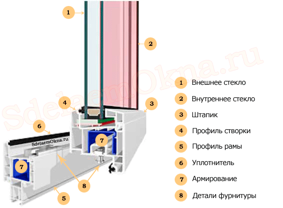
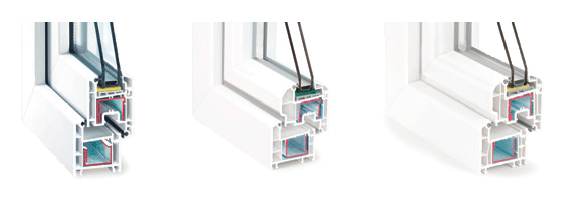
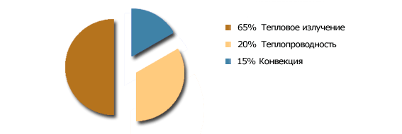

Пластиковые окна в Казани
Как сделать осознанный выбор?
Пластиковые окна прочно вошли в нашу жизнь. За последние годы, благодаря снижению цен, и увеличению числа производителей, установка окон из пвх профилей стала доступна многим. В наши дни пластиковые окна - обязательный атрибут хорошего ремонта квартиры. Но как выбрать из всего многообразия производителей тех, кто установит качественные изделия, которые прослужат многие годы? Для этого нужно разобраться, из чего же они состоят?
Из чего состоят пластиковые окна?
Пластиковые окна состоят из множествам деталей, часть из которых видна на рисунке 1:
Используя различные виды профиля, фурнитуры, стеклопакетов и армирования, можно добиться нужных качеств, подходящих к любой конкретной ситуации. Так, например, для регионов с суровым климатом, где зимняя температура может опускаться до -45°C подойдет толстый пятикамерный профиль, а для средней полосы может быть достаточно трехкамерного.
Как выбрать пластиковые окна?
Для того, чтобы окна служили верой и правдой много лет необходимо соблюдение требований к технологии сборки, установки и эксплуатации. Помимо этого, при изготовлении необходимо учитывать и конкретный проем, в который будут такие конструкции установлены. Главной величиной, характеризующей теплозащитные свойства пластиковых окон является приведенное сопротивление теплопередаче.
Сопротивление теплопередаче пластиковых окон
Выбор комплектующих для изготовления пластиковых окон с учетом R0 - важный этап правильного проектирования.
В России требования к тепловой защите окон регламентируются СНиП 23-02-2003 «Тепловая защита зданий»[1]. Для расчета необходимых величин применяется СНиП 23-01-99 «Строительная климатология»[2] и ГОСТ 30494-96 «Здания жилые и общественные. Параметры микроклимата в помещениях»[3].
Согласно [1] приведенное сопротивление теплопередаче нормируется в зависимости от градусосуток отопительного периода. Этот показатель различается, в зависимости от географического расположения населенного пункта и вычисляется по формуле:
где tвн - температура внутреннего воздуха, tвнеш - средняя температура внешнего воздуха в отопительный период, Z - продолжительность отопительного периода в сутках.
Определим требуемое сопротивление теплопередачи пластиковых окон для Казани:
- Температура внутреннего воздуха принимается, согласно [3], равной tвн=20°C.
- Средняя температура наружного воздуха и продолжительность отопительного периода для Казани: tвнеш= -1,8°C, Z = 220 суток, [2].
Как выбрать профиль?
Решив поменять окна и приступив к поискам фирмы-производителя, вы найдете множество рекламных предложений. Каждый дилер или производство пластиковых окон в спб рассказывает о преимуществах своего профиля и, возможно, о недостатке другого. При этом различия будут в стране производства, количестве камер, и, может быть, в качестве самого пластика и его внешней эстетике.
Есть довольно известные, раскрученные марки, такие как: Veka, Rehau, KBE, Gealan и некоторые другие. Это лидеры и на их долю приходится большинство установленных окон. Пластиковый профиль этих марок, чаще всего, производится в России по немецкой технологии. Есть профиля других стран: китайские, турецкие, польские, датские. Есть профиля-аналоги известных марок, которые очень сложно отличить от оригинала. Важно четко понимать, что:
Современные ГОСТ, RAL нормируют и толщину стенок профиля и жесткость армирования, и производитель гарантирует их изготовление согласно ГОСТ 30674-99. Основное правило для выбора профиля - достаточный уровень сопротивления теплопередачи, все остальное на совести технологов производства и монтажников.
Например, сопротивление теплопередачи (R0) различных профилей REHAU:
| R0: | 0,63 м2 °C/Вт | |
| Число камер: | 3 | |
| Ширина: | 60 мм | |
| R0: | 0,72 м2 °C/Вт | |
| Число камер: | 3 | |
| Ширина: | 70 мм | |
| R0: | 0,79 м2 °C/Вт | |
| Число камер: | 5 | |
| Ширина: | 70 мм | |
Расчеты допустимой статической нагрузки и правильного выбора армирования оставим на совести производства, в большинстве случаев, при изготовлении стандартных пластиковых окон в Казани, расположенных не выше 20 метров над землей, подойдет минимально допустимое. Если конструкции больших размеров и высоко расположены, производитель обязан провести расчет статической нагрузки и выбрать адекватный армирующий профиль.
Как выбрать стеклопакет?
По разным данным, структура теплопотерь через стеклопакет приблизительно выглядит так: 65% за счет излучения, 20% за счет теплопроводности и 15% за счет конвекции.
Структура теплопотерь через пластиковые окна
Снижение потерь тепла за счет излучения достигается путем установки стеклопакетов с энергосберегающими стеклами. Снижение теплопотерь за счет конвекции - заполнением внутренней воздушной камеры инертным газом, например аргоном. Увеличение сопротивления теплопередачи стеклопакета достигается увеличением воздушной камеры или установкой стеклопакетов с большим количеством стекол (двухкамерных).
Определим, какой стеклопакет проходит по минимальным требованиям для установки в Казани в оконный блок из профиля Basic Design:
- R0=0,54 м2 °C/Вт - требуемое сопротивление теплопередачи оконного блока.
- Площадь непрозрачной части окна S(проф) размером 1,5м * 1,5м приблизительно равна 0,64 м2
- Площадь прозрачной части S(ст) - 1,61 м2
- R0(проф) профиля Basic Design = 0,63 м2 °C/Вт
0,54 = (R0(ст)*1,61 + (0,64*0,62))/2,25 ⇒ R0(ст) = 0,51 м2 °C/Вт. По ГОСТ 24866-99 (приложение А) такому R0(ст) соответствует, например, стеклопакет 4-16-4И, его R0(ст)=0,59 м2 °C/Вт
Учитывая охлаждающую способность ветра, рекомендуется выбирать стеклопакет с запасом теплозащиты.
Требования к фурнитуре
Оконная фурнитура для современных конструкций из пвх обеспечивает высокие эксплуатационные качества и позволяет выполнять множество разнообразных функций, улучшающих комфорт и безопасность помещения. Поэтому:
Поворотно-откидная фурнитура производится такими фирмами как: Siegenia-Aubi, ROTO, MACO, G-U, Winkhaus и другими. Створки, оснащенные поворотно-откидной фурнитурой позволяют открывать окна в двух режимах: в поворотном - как обычно и откидном - поворачивая створку вокруг нижней горизонтальной оси. Такой режим часто используется для проветривания.
Устройства для проветривания
Использование для проветривания режима "откинуто" имеет много минусов: это и высокие теплопотери зимой и отсутствие защиты от внешнего шума и опасность проникновения в открытое пластиковое окно, необходимость постоянного присутствия человека, для того, чтобы открывать и закрывать окна. Для решения этих проблем почти во всех марках фурнитуры есть дополнительные устройства для проветривания помещения.
Устройства детской безопасности
Распространенная последовательность открывания створки поворот-откид не обеспечивает высокой безопасности с точки зрения нежелательного открывания таких окон детьми.
Фурнитура «откинуто-открыто» для пластиковых окон
Фурнитура TiltFirst или TiltBeforeTurn, что переводится как «сначала откинуто», cостоит из специальных деталей фурнитуры и ручки с замком. Эта модель меняет традиционную последовательность открывания: при повороте на 90° в горизонтальное положение - происходит откидывание створки, а после разблокирования замка ключом и поворота ручки вертикально - открывание.
Взломобезопасность пластиковых окон
По данным статистики правоохранительных органов, даже не особо опытный взломщик проникнет в помещение через окно со стандартной фурнитурой в течение 10-15 минут, используя при этом минимальный набор инструментов. Основной способ проникновения - отжим створки (около 70% случаев) в помощью рычага (фомки). Поэтому, для помещений с повышенным риском проникновения рекомендуется установка противовзломной фурнитуры.
Есть несколько классов защиты, различающихся количеством точек прижима и усилиями взломщика, которые выдержит такое пластиковые окно.
Противовзломная оконная фурнитура отличается от стандартной количеством точек запирания, специальной грибовидной формой цапфы и формой ответных планок, а также, обязательно, - ручкой с замком. Эти дополнительные элементы исключают взлом пластикового окна и проникновение в помещение через открытую створку.
Для предотвращения проникновения через разбитый стеклопакет рекомендуется использование защитных пленок или триплекса (многослойного стекла).
Несколько практических советов по выбору пластиковых окон:
- Будет лучше, если вы сами просчитаете требуемую теплопроводность стеклопакета и профиля и закажете осмысленно, а не просто по рекомендации менеджера. Выбирайте профиль и стеклопакет с запасом теплозащиты, зимы бывают холодные и отопление могут отключить.
- При выборе поставщика выбирайте не марку профиля и фурнитуры, а репутацию и опыт завода-производителя.
- Заказывайте створки с фурнитурой, открывающейся в двух положениях, это избавит вас от появления продувания между петель в будущем.
- Однокамерный стеклопакет с энергосберегающим стеклом теплее, чем с двухкамерным. При этом он легче, а значит меньше нагрузка на приборы запирания.
- После установки сохраните все документы, это значительно сэкономит ваши деньги и время фирмам, занимающимся ремонтом пластиковых окон, если окна сломаются.
- Попросите у производителя инструкцию по уходу и соблюдайте рекомендации производителя.
Пластиковые окна в Казани, собранные и установленные по ГОСТ с учетом требований СНиП, прослужат вам долго и доставят только приятные эмоции!
 Спасибо! Расчет через интернет экономит нам время, а Вам - приятный бонус!
Спасибо! Расчет через интернет экономит нам время, а Вам - приятный бонус!